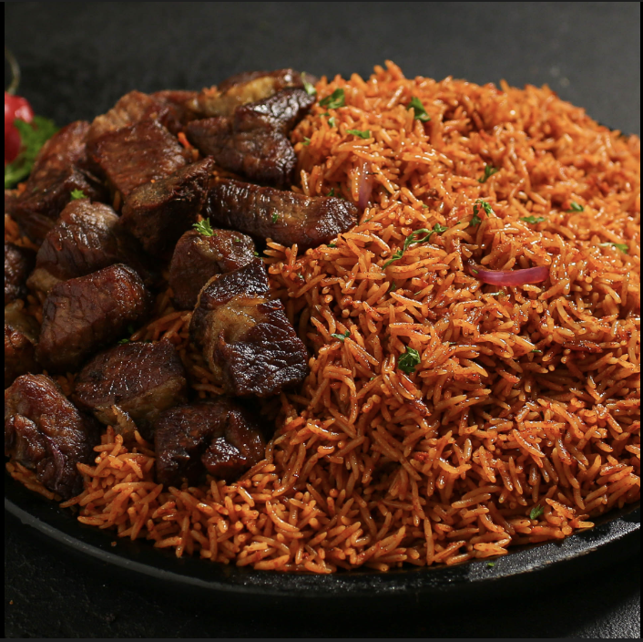

Nigerian Jollof Rice
A smoky and flavourful one-pot rice dish that is always available at celebrations across West Africa.
Recipe Details
Prep Time 20 minutes
Cook Time 45 minutes
Servings 4 minutes
Difficulty intermediate
Ingredients
- 2 cups of Rice
- 2 Sachet of Tomato Paste
- 2 Red Bell Pepper
- 2 Tablespoons of Vegetable Oil
- 1 cup of Chicken Stock
- Salt and Seasoning to Taste
Instructions
- Blend the tomatoes, peppers and half the onion into a smooth paste.
- Heat oil in a pot and fry the blended mixture for 15 minutes until the water dries out.
- Add chicken stock, salt and seasoning — stir well.
- Wash rice and add it to the pot. Stir to combine.
- Cover tightly and cook on low heat for 30 minutes, stirring halfway through.
- Seperate with a fork or spoon and serve hot.
Tip
Pro Tip For the signature smoky flavour, let the rice steam on very low heat for the last 5 minutes without lifting the lid.

This recipe is perfect for large gatherings and can be scaled up easily